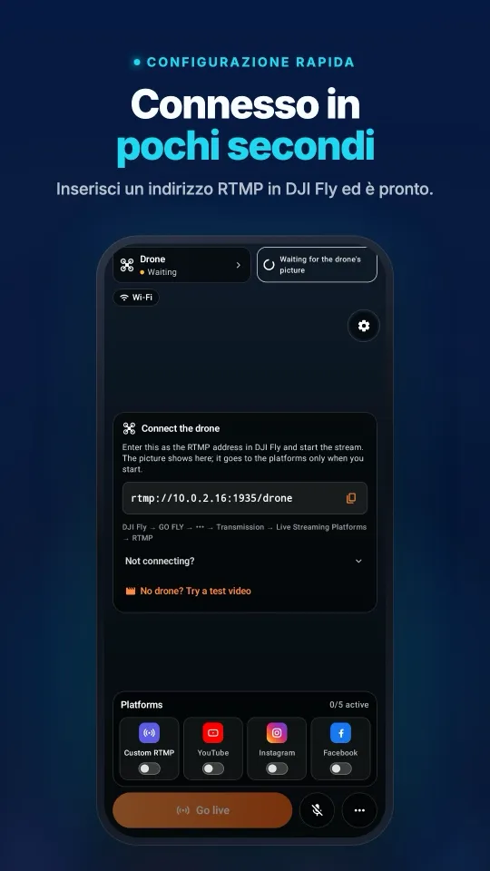
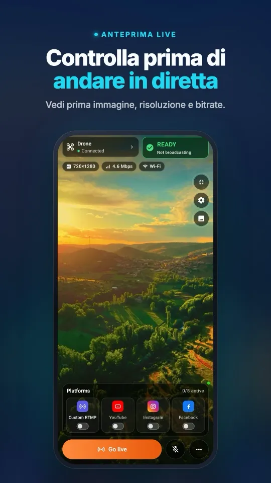
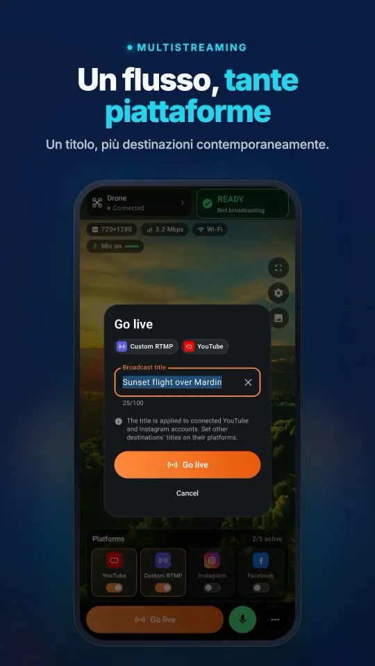
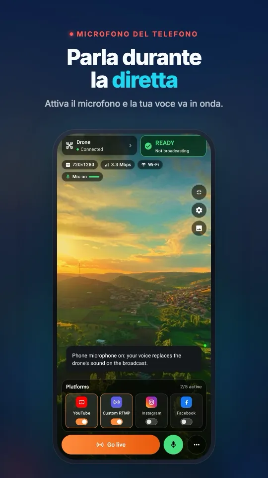
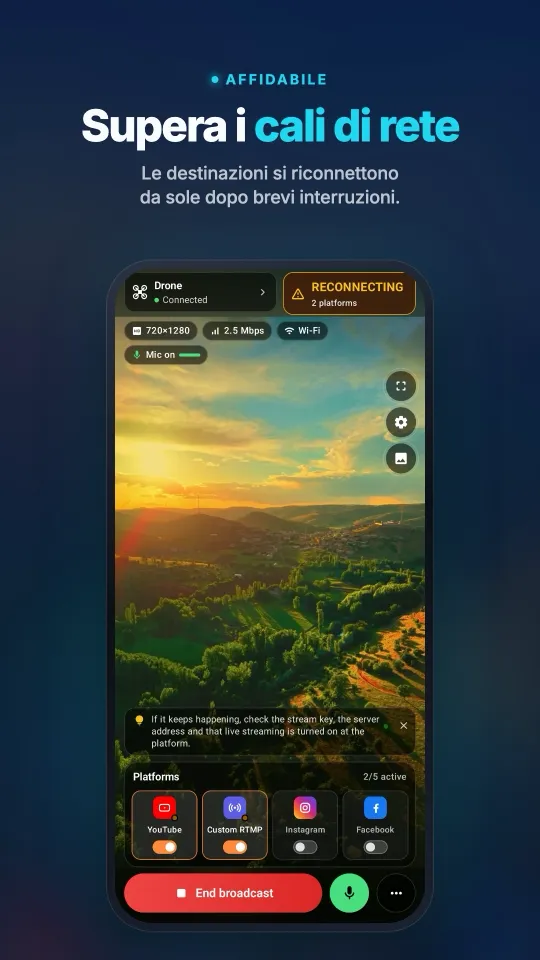

Come trasmettere in diretta con una Osmo Action su Instagram e TikTok
Le action cam Osmo Action trasmettono via RTMP da DJI Mimo fino a 1080p, da un casco, un manubrio, un'auto o un treppiede. Da sola, DJI Mimo arriva a Facebook, YouTube o a un indirizzo RTMP; manda quel flusso RTMP a Stream My Drone su un computer e la stessa immagine va su Instagram, TikTok, YouTube, Twitch o Kick insieme.
In breve
- Osmo Action 6, 5 Pro, 4 e 3 trasmettono in RTMP da DJI Mimo (1.2.20 o successiva) a 480p, 720p o 1080p, fino a 6 Mbps.
- La fotocamera si collega da sola a una rete Wi-Fi; mettila sulla stessa rete del computer o su un hotspot condiviso con lui.
- Stream My Drone invia il flusso a più piattaforme insieme, Instagram compresa via RTMPS.
- Il verticale 1080×1920 con riempimento sfocato mantiene intera la ripresa d'azione sugli schermi dei telefoni.
- La fotocamera virtuale trasforma la Osmo Action anche in una fotocamera senza fili per OBS, Zoom o TikTok LIVE Studio.
Configurare la diretta della Osmo Action
- Apri Stream My DroneInstalla Stream My Drone su un Mac o un PC Windows e annota l'indirizzo che mostra, come
rtmp://192.168.1.20:1935/drone. - Collega la fotocamera in DJI MimoAggiorna DJI Mimo e il firmware della fotocamera, collega la Osmo Action e apri l'opzione di diretta.
- Scegli RTMP e il Wi-FiSeleziona RTMP e il Wi-Fi a cui deve collegarsi la fotocamera: la rete del computer, o l'hotspot di un telefono usato anche dal computer.
- Inserisci l'indirizzo e avviaDigita l'indirizzo di Stream My Drone, scegli 1080p e il bitrate più alto che la rete regge, poi avvia. L'anteprima compare nell'app.
- Aggiungi le piattaforme e vai in direttaAggiungi Instagram, TikTok, YouTube, Twitch o qualsiasi server RTMP e premi AVVIA DIRETTA.

Le altre fotocamere DJI con diretta RTMP sono elencate nella guida alle fotocamere Osmo.
Dove una diretta con action cam dà il meglio
- Sport e uscite. Bici, moto, sci o corsa: un solo punto di vista, in diretta su più piattaforme.
- Dietro le quinte. Monta la fotocamera su un set o sulla parete del laboratorio e trasmetti mentre lavori.
- Una seconda inquadratura. Con la fotocamera virtuale aggiungi la Osmo Action come sorgente senza fili in OBS accanto alla fotocamera principale: vedi la guida alla webcam.
- Dirette con qualsiasi tempo. La fotocamera regge pioggia e polvere; il computer resta all'asciutto in auto o in tenda.
Ecco come appare sul telefonoDalla connessione con DJI Fly alla diretta su più piattaforme, tutto in una schermata.




Portata e rete
La fotocamera manda il flusso al computer via Wi-Fi, quindi deve restare a portata di quella rete. Per le riprese in movimento, un hotspot del telefono portato vicino alla fotocamera, con il computer sullo stesso hotspot, tiene corto il collegamento. L'upload verso le piattaforme usa allora i dati mobili dell'hotspot, circa 6 Mbps per destinazione.
| Configurazione | Ideale per |
|---|---|
| Wi-Fi di casa o del locale | Inquadrature fisse, laboratori, eventi |
| Hotspot del telefono vicino a fotocamera e computer | Riprese all'aperto e brevi riprese in movimento |
| Router da viaggio in auto o in furgone | Uscite in cui il computer viaggia con te |
Quando non funziona
- La fotocamera non riesce a connettersi: non è sulla rete del computer, oppure una rete per ospiti isola i dispositivi.
- La diretta cade in movimento: la fotocamera è uscita dalla portata del Wi-Fi; tieni l'hotspot più vicino o abbassa il bitrate.
- Manca l'opzione di diretta: aggiorna DJI Mimo alla 1.2.20 o successiva e il firmware della fotocamera.
- Instagram rifiuta il flusso: crea un nuovo video in diretta su instagram.com e aggiorna la chiave; ogni chiave funziona una sola volta.
Domande
La Osmo Action 5 Pro può andare in diretta su Instagram?
Non con la sola DJI Mimo. Trasmetti via RTMP a Stream My Drone, che inoltra l'immagine a Instagram via RTMPS.
Quali Osmo Action supportano la diretta RTMP?
Secondo DJI: Osmo Action 6, 5 Pro, 4 e 3, DJI Action 2 e la prima Osmo Action (al massimo 720p).
Posso trasmettere con una Osmo Action su Twitch e YouTube contemporaneamente?
Sì. Aggiungi entrambe le destinazioni in Stream My Drone e premi AVVIA DIRETTA.
Quanto può essere lontana la fotocamera dal computer?
Fin dove arriva il Wi-Fi. La fotocamera trasmette al computer su quella rete, quindi tienila a portata o porta con te un hotspot.
Trasmetti il tuo drone in diretta dal telefono
Stream My Drone per Android e iPhone riceve l'immagine di DJI Fly e la invia a YouTube, Instagram, Facebook, TikTok, Twitch, Kick o al tuo server, a più destinazioni insieme. Acquisto unico, nessun abbonamento.

Altre guide
Come fare una diretta streaming con un drone (passo passo, 2026)
Come fare una diretta con un drone su YouTube, Instagram, TikTok o Facebook: cosa serve, i 4 metodi, DJI Fly RTMP in 5 passaggi, velocità di internet e soluzioni.
“Livestream error” in DJI Fly: le cause e come risolvere ognuna
DJI Fly mostra “Livestream error” o “Starting livestream failed”? Le 8 cause reali (RTMPS, chiave, account, microfono, rete) e come risolvere ognuna.
Quali droni DJI possono fare dirette? L’elenco completo di modelli e radiocomandi
Tutti i droni DJI che fanno dirette in DJI Fly, da Mini 2 e Mini 4K a Mavic 4 Pro e Avata 360, quali radiocomandi funzionano e i limiti di 720p e microfono.
Come trasmettere un matrimonio in diretta con un drone
Trasmetti un matrimonio con un drone DJI per chi non può esserci: il piano, la lista dell’attrezzatura, il link YouTube privato, setup con smartphone o portatile e regole di sicurezza.
La DJI RC 2 non va in diretta senza microfono? Come risolvere “No built-in mic in current device”
DJI Fly 1.16 non avvia la diretta della RC 2 senza microfono. Perché succede, cosa funziona (microfono USB-C, AirPods) e una soluzione senza hardware con un telefono Android.
Come andare in diretta con un DJI Flip
Diretta streaming con DJI Flip e RC 2, RC-N3 o RC-N2: configurazione RTMP su telefono e computer, differenze dal controllo con il palmo, formato verticale e piattaforme.
Come andare in diretta con un DJI Lito X1
Come andare in diretta con DJI Lito X1 e RC 2, RC-N3 o RC-N2: impostazioni RTMP di DJI Fly, metodo con telefono o computer, piattaforme e soluzione dei problemi.
Come andare in diretta con un DJI Lito 1
Diretta streaming con DJI Lito 1 e RC-N3, RC-N2 o RC 2: impostazioni RTMP di DJI Fly, metodo con computer o telefono, piattaforme e soluzione dei problemi.
Come andare in diretta con un DJI Air 3S
Diretta con DJI Air 3S su YouTube, Instagram o Facebook: scegli il radiocomando, collega DJI Fly RTMP a un telefono o a un computer e controlla l'immagine in uscita.
Come andare in diretta con un DJI Air 3
Diretta streaming con DJI Air 3 su YouTube, Instagram o Facebook: scegli il radiocomando, collega DJI Fly RTMP a telefono o computer e controlla l'immagine in uscita.
Come andare in diretta con un DJI Mavic 4 Pro
Diretta con DJI Mavic 4 Pro e RC 2 o RC Pro 2 verso telefono o computer: verifica DJI Fly RTMP, le differenze del microfono, il limite di 720p e le piattaforme.
Come andare in diretta con un DJI Mavic 3, Classic o Pro
Diretta streaming con DJI Mavic 3, Classic o Pro con RC-N1 o RC Pro: perché DJI RC non trasmette, ricezione su telefono, RTMP su computer e limiti di qualità.
Come andare in diretta con un DJI Mini 3 Pro
Diretta streaming con DJI Mini 3 Pro tramite RC-N1, DJI Fly sul telefono e Stream My Drone su computer. Scopri perché il DJI RC originale non può usare questo RTMP.
Come andare in diretta con un DJI Mini 3
Configura la diretta streaming del DJI Mini 3 con RC-N1 e DJI Fly verso Stream My Drone su computer. Limiti del DJI RC, visione live a 720p e pubblicazione.
Come andare in diretta con un DJI Mini 5 Pro
Diretta streaming con DJI Mini 5 Pro e RC 2 o RC-N3: configura l'RTMP di DJI Fly, usa un telefono o un computer e manda il video del drone su YouTube, Instagram o Facebook.
Come andare in diretta con un DJI Mini 4 Pro
Diretta streaming con DJI Mini 4 Pro e RC 2 o RC-N2: configurazione da telefono o computer, impostazioni RTMP di DJI Fly, microfono obbligatorio e controlli sulla piattaforma.
Riconosci e conta gli animali in diretta dal tuo drone DJI
Stream My Drone riconosce capre, pecore, mucche, cavalli, asini e pollame nell'immagine dal vivo del drone, li segna nella diretta e li conta, tutto sul tuo computer.
Diretta streaming RTMP con DJI Fly: la configurazione completa
Come configurare la diretta RTMP in DJI Fly: dove si trova l'impostazione, quale indirizzo inserire, come collegare in rete radiocomando e computer e come risolvere i problemi.
Perché DJI Fly non riesce a trasmettere su Instagram (e la soluzione)
DJI Fly non ha l'opzione Instagram e il suo client RTMP non supporta l'RTMPS cifrato richiesto da Instagram. Ecco perché e come andare comunque in diretta da un drone DJI.
Trasforma il tuo drone DJI nella webcam del computer
Trasforma il tuo drone DJI in una webcam per TikTok LIVE Studio, OBS, Zoom, Google Meet o Teams con la fotocamera virtuale di Stream My Drone. Configurazione, idee e soluzioni.
Come andare in diretta con un DJI Neo
Come andare in diretta con un DJI Neo: quale modalità di controllo funziona (telefono, RC-N3, visore), l'RTMP in DJI Fly e la diretta su Instagram, TikTok o YouTube con Stream My Drone.
Come andare in diretta con un DJI Avata 2
Come trasmettere in diretta le riprese FPV di un DJI Avata 2: condividi la visuale dei Goggles 3 con DJI Fly sul telefono, invia via RTMP e vai live su Instagram, TikTok o YouTube.
Trasmetti in diretta dalla tua DJI Osmo su Instagram, TikTok e altro
DJI Mimo può trasmettere via RTMP da Osmo Action, Osmo Pocket e Osmo 360. Mandalo a Stream My Drone per andare in diretta su Instagram, TikTok e YouTube insieme.
Come trasmettere in diretta con la Osmo Pocket 3 su Instagram e TikTok
Come andare in diretta con una DJI Osmo Pocket 3 via RTMP da DJI Mimo su Instagram, TikTok e YouTube insieme, e usarla come webcam senza fili, con Stream My Drone.
Come andare in diretta su TikTok con un drone DJI
Diretta su TikTok da un drone DJI con DJI Fly: con una chiave di streaming TikTok, oppure senza, tramite TikTok LIVE Studio e una fotocamera virtuale. Impostazioni e problemi.
Come andare in diretta su Instagram con un drone DJI
Diretta su Instagram da un drone DJI: prendi URL e chiave di streaming su instagram.com, manda il flusso RTMP di DJI Fly tramite Stream My Drone e premi «Vai in diretta».
Come trasmettere in diretta su YouTube con un drone DJI
Diretta su YouTube da un drone DJI: attiva lo streaming live, copia la chiave di streaming da YouTube Studio e manda l'RTMP di DJI Fly tramite Stream My Drone. Impostazioni e consigli.
Come andare in diretta su Facebook con un drone DJI
Diretta su Facebook da un drone DJI: prendi URL del server RTMPS e chiave di streaming da Live Producer, manda il flusso di DJI Fly tramite Stream My Drone e vai live.
Come trasmettere un drone DJI su Twitch
Diretta su Twitch da un drone DJI: copia la chiave di streaming dalla Dashboard del creator, aggiungi Twitch come destinazione RTMP personalizzata in Stream My Drone e vai live.
Come trasmettere un drone DJI su Kick
Diretta su Kick da un drone DJI: copia URL e chiave di streaming dalla dashboard di Kick, aggiungili come destinazione RTMP personalizzata in Stream My Drone e vai live.
Trasmetti un drone DJI su più piattaforme contemporaneamente
Manda una sola diretta del drone DJI su TikTok, Instagram, YouTube, Facebook, Twitch e Kick nello stesso momento con Stream My Drone: gratis, in locale, senza servizi di restream.
Stream My Drone o Restream: quale scegliere per il tuo drone?
Diretta da un drone DJI su più piattaforme: il relay in cloud di Restream o Stream My Drone sul tuo computer? Costi, watermark, Instagram, video verticale e quando conviene ciascuno.
Trasmetti un drone DJI senza configurare NGINX e OBS
Il metodo classico per portare DJI Fly in OBS è un server RTMP NGINX, un file di configurazione e una sorgente multimediale. Ecco cosa comporta e come evitarlo con una sola app.